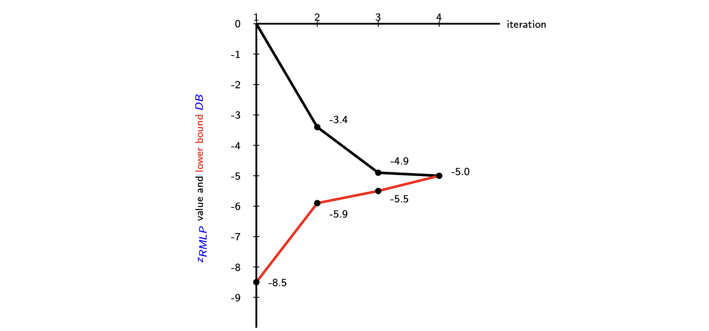
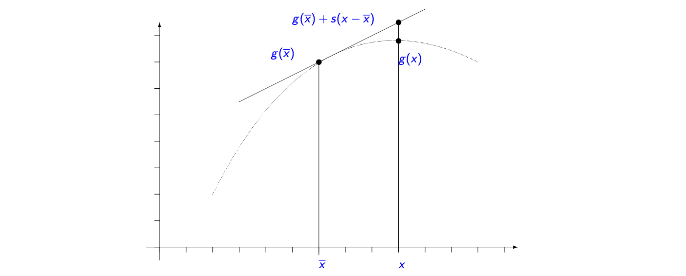
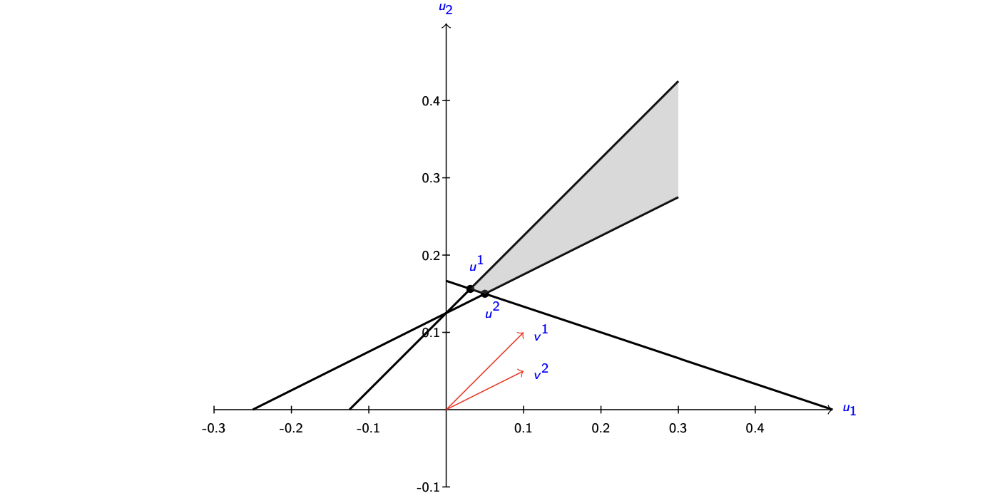

离散优化 Ch_08: 分解、拉格朗日松弛与列生成¶
核心摘要
详解整数规划分解的三大方法：交集、并集、变量固定。深入拉格朗日松弛、Dantzig-Wolfe 重构、列生成算法及 Benders 分解，配以装箱、分配、库存等经典应用实例。
1. Introduction (引言)¶
1.1 基础问题定义¶
我们旨在求解以下整数规划（Integer Program, IP）：
其中 \(X = P \cap \mathbb{Z}^n\)，且 \(P = \{x \in \mathbb{R}_+^n : Ax \geq a\}\)。
或混合整数规划（Mixed Integer Program, MIP）：
其中 \(X^M = P^M \cap (\mathbb{Z}^n \times \mathbb{R}^p)\)，且 \(P^M = \{(x, y) \in \mathbb{R}_+^n \times \mathbb{R}_+^p : Gx + Hy \geq b\}\)。
当直接在可行集 \(X\) 上优化过于困难时，我们希望对 \(X\) 进行分解（Decompose），以得到具有特定结构（structure）的一个或多个子集。
1.2 分解的三种方式 (Three Ways of Decomposing)¶
| 方式 | 数学形式 | 说明 |
|---|---|---|
| 交集（Intersections） | \(X = Y \cap Z\) | 若 \(Z\) 具有结构，可考虑对 \(Z\) 进行重构。更一般地：\(X = X^1 \cap \cdots \cap X^K\)，其中某些 \(X^i\) 具有结构；或 \(Z\) 分解为 \(Z = Z^1 \times \cdots \times Z^K\)（变量分离）。 |
| 并集（Unions / Disjunctions） | \(X = Y \cup Z\) | \(Z\) 具有结构。也可以是 \(X = X^1 \cup \cdots \cup X^K\)。 |
| 变量固定（Variable Fixing） | \(Z(\overline{x}) = \{(x, y) \in X : x = \overline{x}\}\) | 对固定值 \(\overline{x}\)，子问题 \(Z(\overline{x})\) 对所有 \(\overline{x}\) 都具有结构。 |
1.3 具有结构的集合 \(Z\) (Set \(Z\) with Structure)¶
称集合 \(Z\) 具有结构的情况包括：
三种结构化情况
i) 可快速求解：问题 \(\min\{cx : x \in Z\}\) 可在实践中快速求解（例如存在多项式时间算法）。 处理方法：价格或约束分解（Price or Constraint Decomposition）。
ii) 可快速分离：存在多项式时间算法可求解 \(x^*\) 关于 \(Z\) 的分离问题（Separation Problem）。 处理方法：资源或变量分解（Resource or Variable Decomposition）。
iii) 可扩展重构：\(Z\) 具有可通过引入新变量来利用的特定结构，即能找到紧的（tight）或至少比初始形式强得多的紧凑扩展形式（Compact Extended Formulation）。
导出扩展形式的方法：
- 变量分裂（Variable splitting）
- 动态规划算法
- 多面体的并集（Unions of polyhedra）
- 显式凸包描述或相关分离问题
2. Price or Constraint Decomposition (价格或约束分解)¶
2.1 问题形式化¶
考虑如下形式的 IP：
其中 \(X = \{x \in \mathbb{Z}_+^n : Dx \geq d, Bx \geq b\}\)：
- \(Dx \geq d\)：复杂约束（Complicating constraints），定义 \(Y = \{x \in \mathbb{Z}_+^n : Dx \geq d\}\)
- \(Bx \geq b\)：定义易处理集（Tractable set） \(Z = \{x \in \mathbb{Z}_+^n : Bx \geq b\}\)，即 \(\min\{cx : x \in Z\}\) 可快速求解
目标：通过对简单集 \(Z\) 的优化来产生对偶界（Dual bounds）。
两种主要方法：
- Lagrangean Relaxation（拉格朗日松弛）：将复杂约束松弛，并在目标函数中对违反进行惩罚。
- Dantzig-Wolfe Reformulation（D-W 重构）：将 \(X\) 上的优化视为从 \(Z\) 中选择同时满足 \(Y\) 约束的解。
2.2 块对角结构 (Block Diagonal Structure)¶
在许多应用中，\(Bx \geq b\) 具有块对角（Block Diagonal, BD）结构：
- \(Z = \{Z^1 \times Z^2 \times \cdots \times Z^K\}\)
- 问题可写为：
显式形式为：
松弛约束 \(\sum_{k=1}^{K} D^k x^k \geq d\) 后，问题分解为 \(K\) 个更小的子问题。
2.3 相同子问题 (Identical Sub-problem)¶
块对角结构的特例是相同子问题（IS）情况：
- \(D^{k} = D\), \(B^{k} = B\), \(c^{k} = c\), \(Z^{k} = Z^{*}\) 对所有 \(k\) 成立
- 引入聚合变量（Aggregate variables） \(y = \sum_{k=1}^{K} x^{k}\)
- \(Y = \{y \in \mathbb{Z}_{+}^{n} : Dy \geq d\}\)
问题形式：
2.4 示例：装箱问题 (Bin Packing Problem, BPP)¶
给定 \(K\) 个容量为 1 的箱子和 \(n\) 个尺寸为 \(s_i \in (0, 1]\) 的物品，目标：最小化使用的箱子数。
数值实例：\(n=K=5\)，物品尺寸 \(s=(\frac{1}{6}, \frac{2}{6}, \frac{2}{6}, \frac{3}{6}, \frac{4}{6})\)
IP 形式：
- 变量：\(u_k \in \{0,1\}\)（箱子 \(k\) 是否使用），\(x_{ik} \in \{0,1\}\)（物品 \(i\) 是否放入箱子 \(k\)）
松弛约束 (1) 可将问题分解为 \(K\) 个相同的背包问题（Knapsack problems），对偶变量 \(\pi_i\) 惩罚物品未分配的约束。
2.5 Lagrangean Relaxation and the Lagrangean Dual (拉格朗日松弛与对偶)¶
2.5.1 拉格朗日松弛定义¶
对于问题：
Lagrangean Relaxation 将"困难"约束 \(Dx \geq d\) 转化为以价格 \(\pi\)（惩罚因子）进行违反惩罚的约束，保留描述 \(Z\) 的约束。
Lagrangean Sub-problem（拉格朗日子问题）：
其中 \(L(\pi)\) 称为拉格朗日函数（Lagrangean function）。
2.5.2 弱对偶性 (Weak Duality)¶
Proposition 1 (Weak Duality Property)
对于任何非负惩罚向量 \(\pi \geq 0\)，对偶函数 \(L(\pi)\) 定义了 IP 最优值 \(z\) 的一个下界（Dual bound）：
2.5.3 表示定理回顾¶
Theorem 1 (Minkowski, Convexification)
每个多面体 \(P = \{x \in \mathbb{R}^n : Ax \geq a\}\) 可表示为：
其中 \(\{x^g\}_{g\in G}\) 是 \(P\) 的极点，\(\{v^r\}_{r\in R}\) 是 \(P\) 的极射线。
Theorem 2 (Discretization)
每个 IP 集合 \(X = \{x \in \mathbb{Z}^n : Ax \geq a\}\) 可表示为 \(X = \operatorname{proj}_x(Q_I)\)，其中：
\(\{x^g\}_{g \in G}\) 是 \(X\) 中的整数点有限集，\(\{v^r\}_{r \in R}\) 是 \(\operatorname{conv}(X)\) 的极射线（缩放为整数）。
2.5.4 拉格朗日对偶问题¶
通过对惩罚向量 \(\pi \geq 0\) 最大化拉格朗日函数，得到最佳对偶界：
Lagrangean Dual（拉格朗日对偶）：
Theorem 3 (Lagrangean Duality)
假设约束集 \(Z\) 非空且有界，则拉格朗日对偶可重构为以下线性规划：
证明概要：拉格朗日子问题在 \(\operatorname{conv}(Z)\) 的极点 \(x^t\) 处达到最优。引入变量 \(\sigma\) 表示 \((c - \pi D)x^t\) 的下界，将问题转化为极大 - 极小问题，再取 LP 对偶，最终得到在 \(\operatorname{conv}(Z)\) 与复杂约束交集上最小化 \(cx\) 的形式。
2.5.5 与 LP 松弛的关系及整数性性质¶
设 \(X = \{x \in \mathbb{Z}_+^n : Dx \geq d, Bx \geq b\}\)，\(Z = \{x \in \mathbb{Z}_+^n : Bx \geq b\}\)。
对偶间隙（Duality Gap）：\(z_{IP} - z_{LD} \geq 0\)，取决于 \(\operatorname{conv}(X)\)、\(\operatorname{conv}(Z) \cap \{x : Dx \geq d\}\) 的相对大小以及目标系数 \(c\)。
Corollary 1
\(z_{IP} = z_{LD}\) 对所有 \(c\) 成立当且仅当：
Corollary 2 (Integrality Property, 整数性性质)
设 \(z_{LP} = \min \{cx : Dx \geq d, Bx \geq b, x \in \mathbb{R}_+^n\}\) 为 IP 的 LP 松弛。 若 \(\{x \in \mathbb{R}_+^n : Bx \geq b\}\) 的所有极点都是整数，则 \(z_{LD} = z_{LP}\) 对所有 \(c\) 成立。
Theorem 4 (Optimality Conditions, 最优性条件)
设 \(x^*\) 是 \(L(\pi^*)\) 的最优解，\(\pi^* \geq 0\)。若满足：
则 \(x^*\) 是 IP 的最优解，且 \(z_{LD} = L(\pi^*)\)。
注：这些条件只是充分的，不是必要的。
2.5.6 示例：广义分配问题 (Generalized Assignment Problem, GAP)¶
给定 \(m\) 个背包（容量 \(b_j\)）和 \(n\) 个物品（重量 \(a_{ij}\)，成本 \(c_{ij}\)）。
松弛方式比较：
| 松弛方式 | 对偶问题 | 子问题 | 性质 |
|---|---|---|---|
| 松弛约束 (3)（分配约束） | \(L_1(\lambda)\) | \(m\) 个背包问题 | \(z_{L_1D} \geq z_{LP}\)（可能严格大于） |
| 松弛约束 (4)（容量约束） | \(L_2(\mu)\) | \(n\) 个单纯的选择问题 | \(z_{L_2D} = z_{LP}\) |
| 同时松弛 (3) 和 (4) | \(L_3(\lambda, \mu)\) | 简单分配 | \(z_{L_3D} = z_{LP}\) |
结论：第一、三种松弛满足整数性性质，而第一种松弛可能给出更强的界。
2.5.7 对偶间隙示例与几何解释¶
考虑问题：
计算得 \(z_{LD} = \frac{44}{3} \approx 14.67\)（当 \(\lambda = \frac{7}{3}\) 时），而 \(z(P) = 17\)。因此对偶间隙 \(z(P) - z_{LD} > 0\)。
对偶的几何解释：
- \(z_{IP}\)：在整数点 \(X\) 与复杂约束交集上的最小值。
- \(z_{LD}\)：在 \(\operatorname{conv}(Z)\) 与复杂约束交集上的最小值。
- 对偶间隙来源于 \(\operatorname{conv}(X)\) 与 \(\operatorname{conv}(Z) \cap \{Dx \geq d\}\) 之间的差异。
2.6 Dantzig-Wolfe Reformulations (Dantzig-Wolfe 重构)¶
考虑问题 \(\min \{cx: Dx \geq d, x \in Z\}\)，其中 \(Z\) 有界。
2.6.1 两种重构方式¶
Convexification Approach（凸化方法）：
设 \(\{x^g\}_{g \in G^c}\) 是 \(\operatorname{conv}(Z)\) 的极点。
Discretization Approach（离散化方法）：
设 \(\{x^g\}_{g \in G^d}\) 是 \(Z\) 的点（所有整数点）。
注：当 \(Z \subseteq \mathbb{B}^n\)（0-1 变量）时，\(DW_c\) 和 \(DW_d\) 无区别，因为 \(Z\) 中每一点都是 \(\operatorname{conv}(Z)\) 的极点。
2.6.2 与拉格朗日松弛的联系¶
\(DW_c\) 的 LP 松弛（称为 Master Problem, MLP）与拉格朗日对偶等价：
2.6.3 多块结构（Block Diagonal）¶
对于多块问题，离散化方法得到：
2.6.4 相同子问题的聚合（Aggregation）¶
当子问题相同时，引入聚合变量 \(v_g = \sum_{k=1}^{K} \lambda_{kg}\) 以避免对称性：
其中 \(v_g\) 表示使用 \(x^g\) 的副本数量。投影到原变量空间得到聚合变量 \(y = \sum_{g \in G^*} x^g v_g\)。
示例：切割库存问题（Cutting Stock Problem, CSP）
- \(Z^* = \{x \in \mathbb{Z}_+^n : \sum_{i=1}^n s_i x_i \leq L\}\)（切割模式）
- 每个 \(x^g\) 对应一种切割模式，\(D=I\)，\(c=1\)。
- \(DW_{ad}\) 形式：最小化使用的模式总数，满足需求约束。
2.7 Solving the Dantzig-Wolfe Relaxation by Column Generation (列生成法求解 D-W 松弛)¶
2.7.1 主问题与限制性主问题¶
\(DW_c\) 的 LP 松弛称为 Master LP (MLP)，具有指数级数量的变量。
Restricted Master LP (RMLP)：仅考虑列的子集 \(\{x^g\}_{g \in \overline{G}}\)，其中 \(\overline{G} \subset G\)：
RMLP 的对偶：
2.7.2 定价问题（Pricing Problem）¶
设 \((\pi', \sigma')\) 为 RMLP 的对偶解。列 \(x^g\) 的缩减成本（Reduced Cost）为 \(cx^g - \pi'Dx^g - \sigma'\)。
通过求解以下子问题隐式检查所有列的缩减成本：
- 若 \(\zeta - \sigma' = 0\)，MLP 已解决。
- 若 \(\zeta - \sigma' < 0\)，将对应 \(x\) 加入 RMLP。
- 每次定价步骤提供一个拉格朗日下界：\(L(\pi') = \pi'd + \zeta\)。
2.7.3 列生成算法步骤¶
Column Generation Algorithm
- 初始化：设置主界 \(PB = +\infty\)，对偶界 \(DB = -\infty\)，\(t=1\)。生成初始列集 \(\{x^g\}_{g \in G^1}\) 使 RMLP 可行。
- 迭代 \(t\)：
a. 求解 RMLP，得原始解 \(\lambda^t\) 和对偶解 \((\pi^t, \sigma^t)\)。
b. 若 \(\lambda^t\) 为整数解，更新 \(PB\)；若 \(PB = DB\)，停止。
c. 求解定价问题 \(SP^t\)：\(\zeta^t = \min\{(c - \pi^t D)x : x \in Z\}\)。
- 若 \(\zeta^t - \sigma^t = 0\)，设 \(DB = z^{RMLP}\)，停止。
- 否则，将 \(x^t\) 加入列集。 d. 更新对偶界 \(DB = \max\{DB, L(\pi^t)\}\)，其中 \(L(\pi^t) = \pi^t d + \zeta^t\)。若 \(PB = DB\)，停止。
- \(t \leftarrow t+1\)，返回步骤 2。
多块结构：上界为 \(\pi'd + \sum_{k=1}^K \sigma_k'\)，下界为 \(\pi'd + \sum_{k=1}^K \zeta^k\)。相同子问题情况下分别为 \(\pi'd + K\sigma'\) 和 \(\pi'd + K\zeta\)。
2.7.4 示例：用列生成求解线性规划¶
问题 \(P\)：
以及仅涉及 \((x_1,x_2)\) 和 \((x_3,x_4)\) 的约束分别定义 \(Z_1\) 和 \(Z_2\)。
算法迭代过程
| 迭代 | RMLP 解 | 对偶解 | 定价问题结果 | 下界 (DB) |
|---|---|---|---|---|
| 1 | \(z=0\) | \((0,0,0)\) | \(x^2=(2, 3/2, 3, 0)\)，\(\zeta=-8.5\) | \(-8.5\) |
| 2 | \(z=-3.4\) | \((-17/10, 0, 0)\) | \(x^3=(0, 5/2, 0, 0)\)，\(\zeta=-2.5\) | \(-5.9\) |
| 3 | \(z=-4.9\) | — | \(x^4=(2, 3/2, 0, 0)\) | \(-5.5\) |
| 4 | \(z=-5\) | \((-1, -1, 0)\) | \(x=(0,0,0,0)\)，\(\zeta=0\) | \(-5.0\) (收敛) |

2.8 Alternative Methods for Solving the Lagrangean Dual (求解拉格朗日对偶的其他方法)¶
2.8.1 次梯度优化（Subgradient Optimization）¶
拉格朗日函数 \(L(\pi)\) 是关于 \(\pi\) 的分段仿射凹函数。
次梯度定义（Subgradient）：若 \(g: \mathbb{R}^n \to \mathbb{R}\) 是凹函数，\(s \in \mathbb{R}^n\) 是 \(g\) 在 \(\overline{x}\) 处的次梯度，如果：

拉格朗日函数的次梯度：设 \(\overline{x}\) 是 \(L(\overline{\pi})\) 的最优解，则 \(s = (d - D\overline{x})\) 是 \(L(\pi)\) 在 \(\pi = \overline{\pi}\) 处的次梯度。
次梯度算法
- 初始化 \(\pi = 0\)，\(t=1\)。
- 迭代 \(t\)： a. 求解 \(LR(\pi^t)\) 得解 \(x^t\) 和界 \(L(\pi^t)\)。 b. 计算次梯度（约束违反度）\(s^t = (d - Dx^t)\)。 c. 更新对偶变量：\(\pi^{t+1} = \max\{0, \pi^t + \epsilon_t s^t\}\)。
- 停止准则（如达到最大迭代次数 \(\tau\)）。
步长选择 \(\epsilon_t\)：
- 归一化步长：\(\epsilon_t = \frac{\alpha_t}{||d - Dx^t||}\)
- 常见选择： i. \(\alpha_t = C(PB - L(\pi^t))\)，\(C \in (0,2)\)，\(PB\) 为原始界。 ii. 几何级数：\(\alpha_t = C\rho^t\)，\(\rho \in (0,1)\)。 iii. 发散级数：\(\lim_{t\to\infty}\alpha_t = 0\) 且 \(\sum \alpha_t \to \infty\)。
获取原始解：利用历史生成的点 \(x^g\) 的凸组合构造候选解 \(\hat{x} = \sum \lambda_g x^g\)。若满足 \(Dx \geq d\) 且为整数，则得到原始界。
示例：SCP 问题的次梯度算法迭代（数值计算见原 PDF）。
2.8.2 改进基本列生成算法¶
改进技术
- Warm Start（热启动）：用对偶启发式初始化对偶解。
- 稳定化技术（Stabilization）：惩罚对偶解偏离稳定中心（Stability center）的偏差。
- 平滑技术（Smoothing）：基于历史迭代平抑当前对偶解。
- 内点法（Interior Point）：提供位于最优解面中心的点。
- 拉格朗日列生成：使用拉格朗日松弛近似最优对偶变量。
2.9 Getting an Integral Solution (获得整数解：Branch-and-Price)¶
结合分支定界（Branch-and-Bound）与列生成（Column Generation）的算法称为 Branch-and-Price 或 IP Column Generation；若结合割平面强化松弛，称为 Branch-Price-and-Cut / Branch-and-Cut-and-Price。
2.9.1 在主变量上分支的问题¶
直接在 Master 变量 \(\lambda_g\) 上分支（\(\lambda_g \leq \lfloor v \rfloor\) 或 \(\lambda_g \geq \lceil v \rceil\)）通常不可取：
- 下界分支约束弱，上界分支显著改变解，导致搜索树不平衡。
- 下界分支需在子问题中添加 \(x \neq x^g\) 约束，破坏结构。
2.9.2 在原变量上分支（Branching on Original Variables）¶
对 \(DW_d\)，当 \(Z \subseteq \mathbb{B}^n\) 时，在原变量 \(x\) 上分支等价于在 Master 变量上分支。
分支规则：
- 检查整数性：若 \(x^* = \sum x^g \lambda_g^* \in \mathbb{Z}^n\)，则为 IP 最优解。
- 否则，选择分数变量 \(x_j^* \notin \mathbb{Z}\)，创建两个分支：
- 上分支（U）：\(x_j \geq \lceil x_j^* \rceil\)
- 下分支（D）：\(x_j \leq \lfloor x_j^* \rfloor\)
实施选项：
| 选项 | 方法 | 子问题 | 比较 |
|---|---|---|---|
| Option 1 | 将分支约束加入主问题（修改 RMLP） | \(\min\{(c - \pi D)x - \mu x_j : x \in Z\}\) | 不改变子问题结构 |
| Option 2 | 将分支约束加入子问题（修改 \(Z\)） | \(\min\{(c - \pi D)x : x \in Z \cap \{x_j \geq \lceil x_j^* \rceil\}\}\) | 界更强 (\(z^{MLP_1} \leq z^{MLP_2}\)) |
比较：
- 界强度：Option 2 更优（\(z^{MLP_1} \leq z^{MLP_2}\)）。
- 子问题复杂度：Option 1 不改变子问题；Option 2 可能增加复杂度，但若子问题仍易处理则更可取。
2.9.3 相同子系统的分支（Identical Subsystems）¶
对聚合模型 \(DW_{ad}\)，直接在聚合变量 \(y\) 上分支通常不足以消除分数解。
Ryan-Foster 分支（用于集合划分问题）：
对于集合划分形式的主问题（如 \(D=I, d=\mathbf{1}\)），若解分数，则存在两行 \(i\) 和 \(j\) 使得：
分支规则（引入辅助变量 \(w_{ij}\)）：
- Option 3（U）：\(w_{ij} = \sum_{g: x_i^g=1, x_j^g=1} v_g \geq 1\)（加入主问题，修改子问题成本）。
- Option 4（Ryan-Foster）：\(w_{ij} = 1\) 即在子问题中强制 \(x_i = x_j\)；\(w_{ij} = 0\) 即强制 \(x_i + x_j \leq 1\)（修改子问题结构）。
应用影响：
| 问题 | Option 4 的影响 |
|---|---|
| BPP | 上分支聚合物品，下分支禁止物品同箱 |
| 图着色 | 上分支收缩边（合并节点），下分支添加边（禁止同色） |
| CVRP | 两种选项均可能破坏子问题结构（最短路径问题） |
2.9.4 实际考量¶
开发 Branch-and-Price 算法需考虑：
- 初始化与热启动
- 列生成稳定化
- 列与割平面结合（Branch-Price-and-Cut）
- 分支策略
- 原始启发式与预处理
- 主问题可行性处理
3. Resource or Variable Decomposition (资源或变量分解 / Benders 分解)¶
处理复杂变量（Complicating Variables）而非复杂约束的方法。
3.1 Benders Reformulation (Benders 重构)¶
考虑 MIP：
其中 \(x\) 是复杂变量。
固定 \(x\) 后得到子问题（线性规划）：
其对偶为：
Proposition 3
设 \(U\) 的对偶多面体极点是 \(\{u^t\}_{t=1}^T\)，极射线是 \(\{v^r\}_{r=1}^R\)，则：
- 若存在极射线 \(v^r\) 使 \(v^r(d - Gx) > 0\)，则 \(LP(x)\) 不可行。
- 否则，\(z_{LP}(x) = \min_{t=1,\ldots,T} \{u^t(d - Gx)\}\)。
Benders 重构形式：
3.2 Benders 算法¶
Benders Algorithm
- 初始化 \(\overline{T} = \overline{R} = \emptyset\)。
- 求解限制性主问题 RMLP，得解 \((\sigma^*, x^*)\)。
- 求解子问题 \(LP(x^*)\)（或其対偶）：
- a) 可行性割平面：若 \(LP(x^*)\) 不可行，得极射线 \(v^r\) 使 \(v^r(d - Gx^*) > 0\)，加入 \(\overline{R}\)。
- b) 最优性割平面：若可行且 \(z_{LP}(x^*) > \sigma^*\)，得对偶极点 \(u^t\)，加入 \(\overline{T}\)。
- c) 最优性：若 \(z_{LP}(x^*) = \sigma^*\)，停止，得 LP 松弛最优解。
3.3 数值示例¶

迭代过程概要：
| 迭代 | \(x\) | 子问题状态 | 操作 |
|---|---|---|---|
| 1 | \((3,3)\) | 不可行 | 添加可行性割平面 \(-9x_1 - 8x_2 \geq -20\) |
| 2 | \((0, 2.5)\) | 最优值 \(3/16 > \sigma^*=-100\) | 添加最优性割平面 |
| 3 | \((0, 2.5)\) | 最优值等于 \(\sigma^*\) | 收敛 |
3.4 示例：无容量设施选址问题 (UFLP)¶
设施选址问题中，固定设施开启决策 \(y\) 后，客户分配问题 \(LP(y)\) 可分解为对每个客户 \(i\) 的独立子问题。
通过分析对偶多面体 \(U^i\) 的极点，得到 Benders 重构：
3.5 总结¶
- Benders 方法也可用于 \(y \in \mathbb{Z}^p\) 的整数子问题（此时分离问题为 IP）。
- 对于块对角结构，子问题可分解为 \(K\) 个独立子问题（如两阶段随机规划）。
4. Notes and References (注释与参考文献)¶
关键文献索引¶
| 主题 | 参考文献 |
|---|---|
| 列生成入门 | Desrosiers and Lübbecke [4], Barnhart et al. [1], Lübbecke and Desrosiers [7] |
| 次梯度优化 | Nemhauser and Wolsey [8], Bazaraa et al. [3] |
| 稳定化技术 | Vanderbeck and Wolsey [11] |
| Ryan-Foster 分支 | Ryan and Foster [9] |
| Benders 分解 | Vanderbeck and Wolsey [11, sec. 13.4] |
完整参考文献列表¶
- [1] Barnhart et al. (1998) - Branch-and-price: Column generation for solving huge integer programs. Operations Research.
- [3] Bazaraa et al. - Nonlinear programming: Theory and algorithms.
- [4] Desrosiers and Lübbecke - Column generation.
- [7] Lübbecke and Desrosiers (2005) - Selected topics in column generation. Operations Research.
- [8] Nemhauser and Wolsey (1988) - Integer and combinatorial optimization.
- [9] Ryan and Foster (1981) - An integer programming approach to scheduling.
- [11] Vanderbeck and Wolsey (2010) - Reformulation and decomposition of integer programs.
注：以上整理涵盖了 PDF 中关于分解理论的核心内容，包括 Lagrangean 松弛、Dantzig-Wolfe 重构、列生成、Benders 分解及其几何解释和算法实现细节。所有重要公式均按原样保留，关键概念提供了中英文对照。